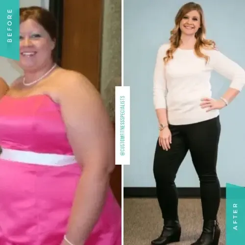
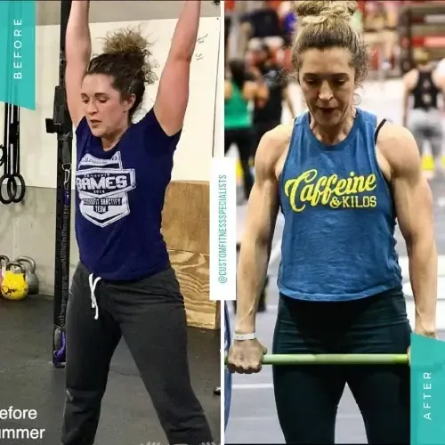
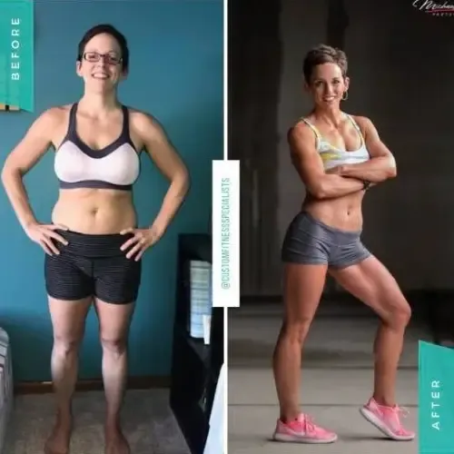
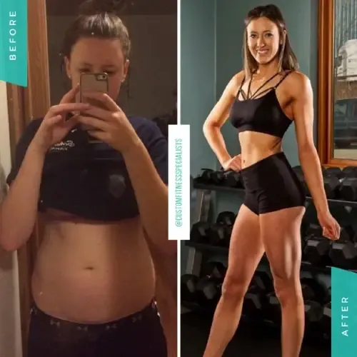
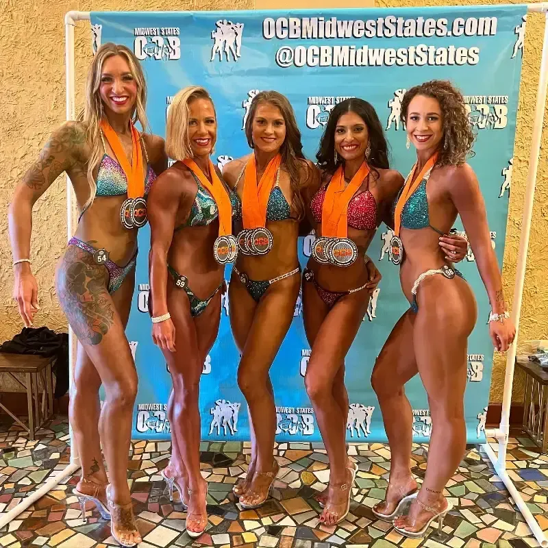
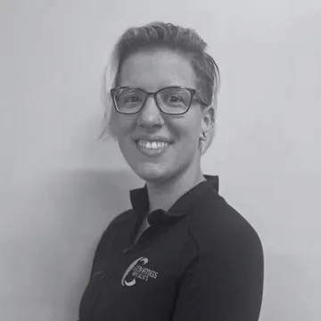
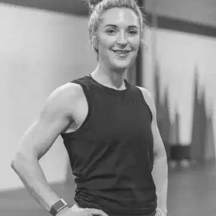
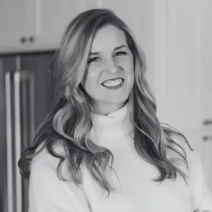
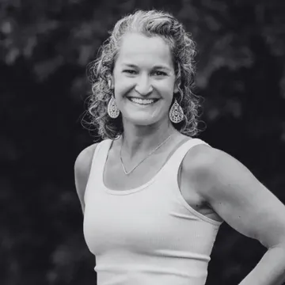
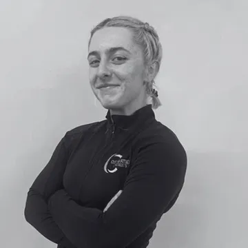

115lbs
down in total
“Never in my wildest dreams did I think that I would be able to say I lost 100+ pounds!”
Ashley Lost her first 40 on her own, then trained with Lisa 2 to 3 times a week. 115 pounds down in total.
Brandi was terrified at her first workout. Jamaar was petrified. Ashley never thought she would reach her goal. With strength training, nutrition coaching and a coach in their corner, they changed how they feel and live. Yours can start with one free conversation.




5.0average from 57 reviews
16years Lisa has coached
8people max per small group
12coaches on the team
Success stories
Real CFS clients, in their own words.
115lbs
down in total
“Never in my wildest dreams did I think that I would be able to say I lost 100+ pounds!”
Ashley Lost her first 40 on her own, then trained with Lisa 2 to 3 times a week. 115 pounds down in total.
9%
body fat down at 50
“I literally went from sitting on the couch every night with a cocktail after work to heading to the gym right after work.”
Brandi Started at 50. In 6 months: 15 pounds and 9% body fat down, size 14 to a 10.

13lbs
down, a lot stronger
“With Lisa's support and guidance I've been able to transform myself and live a much healthier lifestyle.”
Angie A former cardio-only runner. Over 13 pounds down and a lot stronger.
18%
body fat down
“My confidence, determination and self image are on a whole new level. CFS has given me things I didn't even know I needed.”
Patty Down 18% body fat and almost 25 pounds.
68lbs
down in 5 months
“I have gone from 333lbs and dropped 68lbs in 5 months. Lisa has a great team on her staff and I have been amazed of the results working out at CFS.”
Jamaar 68 pounds down in 5 months, with the 5:30 am group.

6mo
from group class to contest prep
“They've changed my life for the better and I wouldn't have wanted to go through this transformation with anyone else.”
Olivia Started in small group. After 6 months she began her own contest prep.
Stories, numbers and photos come from CFS clients, as shared on the current CFS site. Results vary from person to person.
Why women choose CFS
Men train here too. Jamaar's story is one of many. Every program is open to everyone.
A strength-focused studio. No high-impact, high-injury-risk workouts that leave you worse off.
Small groups cap at 8, so form corrections happen every session.
Nutrition coaching without cutting carbs or banning the foods you love. Jessica ate more and trained less, and still leaned out.
Brandi started at 50. Carrie put on muscle at 46. Built for the aging athlete, the busy parent and the professional.
Programs

01
Strength-focused sessions capped at 8 people, so a coach is watching your form every set. Made for the aging athlete, the busy mom or dad and the business professional.
Learn more
02
One-on-one sessions built around your body and goals. A good fit if you are nervous about starting or would rather not train in a group.
Learn more03
A 1:1 coach, weekly check-ins and unlimited messaging, in person or online. No cutting carbs, no banned foods, no drastic calorie cuts.
Learn more
04
Bikini, figure, physique and bodybuilding prep led by Lisa: training, nutrition and posing, for first-timers and veterans.
Learn moreSmall group pricing
12 sessions a month
$199
per month
No long-term contract
Unlimited small group
$259
per month
No long-term contract
Limited-time rate, normally $349
10 pack
$200
one time
Use it over 12 months
Not ready to commit? Start here.
Personal training, nutrition coaching and contest prep are priced by plan and coach. You'll get the details at your free consultation.
Meet Lisa
Lisa Feran owns CFS and leads the contest prep team. She holds a BS in Physical Education, Health and Coaching, is an ACE Certified Personal Trainer and a CISSN Sport Nutrition Specialist.
She holds her clients to high expectations and her coaches to the highest standard of education. Nearly every story on this page has her name in it.
 Ron GratzNutrition coach and personal trainer
Ron GratzNutrition coach and personal trainer Zeenaz BednarCertified personal trainer
Zeenaz BednarCertified personal trainer
Emma KruegerACE trainer, PN1 nutrition coach
Brandi RogersCF-L1 coach, PN nutrition coach Michelle HoeftCertified nutrition coach
Michelle HoeftCertified nutrition coach
Kirstie SkulACE certified health coach
Julie Murphy-AgnewNASM trainer and nutrition coach
Mackenzie SmithCertified personal trainer Erin C.NASM trainer and nutrition coach
Erin C.NASM trainer and nutrition coach Keila B.NASM trainer, leads group sessions
Keila B.NASM trainer, leads group sessions Tara M.Certified personal trainer
Tara M.Certified personal trainerHow it starts
Book a free consultation or send us your info. It takes a minute.
Talk through your goals, history and schedule. No pressure and no quick sale.
Get a plan built for you, with a coach in your corner from day one.
Free consultation
Tell us a little about you. A coach will reach out to set up your free consult. No pressure and no quick sale.
Serving Madison, Middleton, Monona, Fitchburg, Verona, Sun Prairie and Cottage Grove.
FAQ
Yes. Programs are built for every fitness level, from first-timers to seasoned athletes. Your coach starts where you are and adjusts every exercise to fit you.
No. A lot of our members are women, and men train here too. Small group, personal training, nutrition and contest prep are open to everyone.
No. Small group memberships have no long-term contract and you can cancel anytime. The 10 pack can be used over 12 months.
Capped at 8 people per coach, so you get real coaching and form corrections in every session.
It depends on the plan and the coach you work with, so we go over it at your free consultation. Small group prices are listed above.
Yes. Nutrition coaching runs in person or online, with weekly check-ins and messaging with your coach.
Training happens at our Madison studio, 6723 Seybold Rd. Our office is at 802B Lois Dr in Sun Prairie.